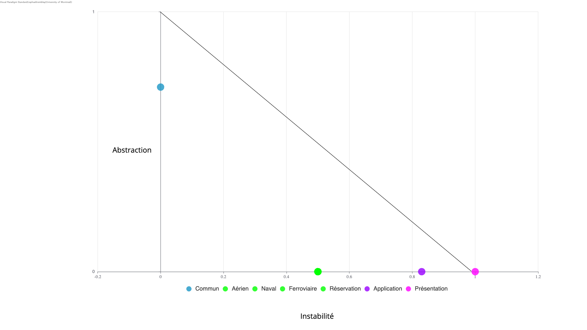

Ce rapport présente les différentes parties du devoir 2.
Le travail comprend la modélisation et l'analyse d'un réseau de Pétri,
la réalisation d'un Statechart pour un four à micro-ondes, ainsi que
la révision et l'analyse de la qualité du design logiciel développé
dans le cadre du devoir 1.
2. Distribution des tâches
Les tâches ont été réparties entre les membres de l'équipe selon les
responsabilités principales de chacun. Pour la révision du devoir 1,
chaque membre révise principalement les éléments auxquels il avait
contribué lors du premier devoir.
Hypothèse 1 :
Nous supposons qu’un `Train` appartient à une seule `LigneTrain` et
qu’un `Trajet` est offert par une `LigneTrain` et réalisé par un `Train` appartenant à cette même ligne.
4. Réseau de Pétri — Tunnel
4.1 Fichiers concernés
[reseau-petri.ext]
images/reseau-petri.png
4.2 Modélisation
[Décrire brièvement le réseau de Pétri réalisé.]
Figure 1 — Réseau de Pétri modélisant le tunnel.
4.3 Loi de conservation
[Démontrer que seule une voiture peut être présente dans le tunnel.]
4.4 Graphe de couverture
Figure 2 — Graphe de couverture du réseau de Pétri.
[Justifier l'équité du système et l'absence de famine.]
Tout d'abord, on a l'état Idle qui représente essentiellement l'état inactif du micro-ondes. Lorsque
le micro-ondes n'est pas en train d'être utilisé, il est en mode idle et en attente du début de processus.
Toutes les données sont réinitialisées dans cet état. Ensuite, on sélectionne la puissance de l'appareil, ce qui
amène à l'état SelectPower. À partir de là, il est possible de changer la puissance de l'appareil à nouveau
et d'aller à l'état SetTime à l'aide de l'action timer. Dans cet état, on utilise l'action digit pour entrer
un à un les chiffres représentant la durée de cuisson. Une fois 4 chiffres entrés, il ne sera plus possible d'en entrer
plus grâce au garde utilisé. Ensuite, à l'aide de l'action start, on se dirige vers l'état Cooking. Dans cet état,
on trouve deux actions temporelles. Dans la première, après 1 seconde on décrémente le temps restant (remaining) tant qu'il reste plus
d'une seconde à la cuisson et ainsi le décompte du micro-ondes se réalise correctement. Dans la deuxième, si après 1 seconde
d'attente il ne reste que 1 seconde à la cuisson, alors la cuisson est terminée et on se dirige vers l'état Finished
en arrêtant la cuisson. Une fois dans cet état, le beep sonore se fait entendre et, après 5 secondes, le beep arrête et
le processus est terminé en retournant à Idle. De plus, il est possible, à partir de chaque état, de réaliser l'action
stop et mettre fin au processus en retournant à Idle. De manière analogue, chaque état permet de réaliser l'action open qui
ouvre la porte du micro-ondes et met le système en mode Waiting. Dans chaque cas, on store dans la variable returnState l'état
qui réalise l'action open de sorte à pouvoir y revenir par la suite lorsque l'action close est réalisée pour fermer la porte du micro-ondes.
De cette manière, le système reprend exactement où il avait laissé lorsque la porte a été ouverte. La seule exception est dans le cas de
Cooking. Dans ce cas, au lieu de revenir à l'état Cooking, on se dirige plutôt à l'état Paused. Ce choix a été fait, car
il est mentionné dans l'énoncé que l'action start doit être réalisée pour reprendre la cuisson. Il faut donc avoir un état qui permet
la transition entre l'action close qui referme la porte et ensuite l'action start qui continue la cuisson.
Figure 4 — Diagramme de classes conceptuel révisé.
6.1.2 Modifications apportées
Les classes générales Lieu, Vehicule, Voyage, Compagnie, Section, UniteReservable et
Utilisateur ont été définies comme abstraites lorsque seules leurs spécialisations représentent des concepts concrets.
Les attributs communs ont été déplacés vers les classes parentes afin d’éviter la duplication, et les attributs génériques
comme id ont été remplacés par des noms propres au domaine, tels que numeroVol, numeroItineraire et numeroReservation.
La classe Ville a été supprimée, LigneTrain est maintenant une spécialisation de Compagnie, et les rôles `Administrateur` et
Passager spécialisent Utilisateur. Certaines associations et cardinalités ont également été corrigées, notamment entre Avion et SectionAvion,
et les visibilités ont été retirées du modèle conceptuel.
6.1.3 Justification
Ces modifications réduisent la duplication et rendent le modèle plus cohérent avec le domaine. Les abstractions
regroupent les caractéristiques communes, tandis que les spécialisations représentent les concepts concrets du système. La suppression des éléments inutiles,
l’utilisation de noms plus représentatifs et la correction des associations rendent le diagramme plus clair, plus précis et plus facilement réutilisable pour produire le design logiciel.
Figure 7 — Diagramme de séquence révisé pour la vérification
des voyages.
Modifications apportées
Éliminer les méthodes comme messages de retour. Spécifier le processus explicitement pour chacun des trois cas présents
de manière à être cohérent avec le diagramme de classes révisé et éliminer la nécessité d'une méthode getInformation().
Justification
Les messages de retour ne nécessitent pas de méthodes, car la classe appelée ne va pas à son tour appeler
la classe appelante, donc ce ne serait pas logique. La cohérence est désormais réinstorée. Deuxièment, j'ai remarqué qu'il n'était pas nécessaire d'avoir
une méthode getInformation(), car il suffit d'itérer dans la liste, par exemple, de vols et vérifier qu'ils comportent
les propriétés recherchées par l'utilisateur et l'ajouter dans la liste à retourner si c'est le cas. Les objets sont déjà présents dans la base de données,
alors il n'est pas nécessaire d'aller chercher l'information complète d'un objet et faire la vérification par la suite; on peut directement accéder aux propriétés des objets et
faire la vérification de cette manière.
Figure 8 — Diagramme de séquence révisé pour la réservation.
Modifications apportées
L’opération verifierDisponibilité() est maintenant appelée sur UniteReservable, puisqu’il s’agit de la classe responsable
de la disponibilité d’une unité pouvant être réservée, plutôt que sur Section.
Les messages représentant des résultats retournés ont également été corrigés afin d’utiliser des messages de retour appropriés.
Ainsi, disponible : Boolean, le retour de la réservation créée ainsi que le message indiquant qu’une réservation est impossible sont représentés
comme des retours.
Justification
Ces modifications améliorent la cohérence entre le diagramme de séquence et le diagramme de classes logiciel.
La vérification de la disponibilité est maintenant attribuée à UniteReservable, qui possède l’information nécessaire,
ce qui respecte le principe GRASP d’Expert en information.
Les messages de retour ont aussi été corrigés afin de respecter la notation UML.
Finalement, le fragment alt représente clairement les cas où la réservation est possible ou impossible.
Le diagramme de paquets a été révisé afin de mieux préciser les responsabilités de chaque partie du système et de refléter
les dépendances présentes dans le diagramme de classes logiciel. Les classes sont maintenant regroupées explicitement dans les paquets Présentation,
Application, Commun, Aerien, Naval, Ferroviaire et Reservation. Cette organisation sépare l’interface utilisateur,
la logique de coordination et les concepts du domaine, tout en faisant apparaître clairement les dépendances entre les paquets.
6.5 Révision des contraintes OCL
1. Un aéroport est identifié par trois lettres uniques à chaque aéroport.
context Aeroport
inv: self.id.size() = 3 and Aeroport.allInstances()->isUnique(id)
2. Une compagnie aérienne est identifiée par un code de deux lettres
unique à chaque compagnie.
context CompagnieAérienne
inv: self.id.size() = 2 and self.id.matches('[A-Za-z]{2}') and
CompagnieAérienne.allInstances()->isUnique(id)
3. Chaque vol est assigné à un avion appartenant à la compagnie
aérienne qui l'exploite.
4. Un même avion peut être assigné à plusieurs vols, mais deux vols
assignés au même avion ne peuvent pas se chevaucher.
context Vol
inv: Vol.allInstances()
->select(v | v.avion = self.avion and v <> self)
->forAll(v | not (v.dateHeureDepart < self.dateHeureArrivee
and v.dateHeureArrivee > self.dateHeureDepart))
5. Un vol est identifié par un ID formé du code à deux lettres de la
compagnie aérienne suivi d'exactement quatre chiffres.
L'ID complet est unique à chaque vol.
context Vol
inv: let nums = self.idVol.substring(3, 6) in
self.idVol = self.compagnieAerienne.id.concat(nums) and self.idVol.size() = 6 and
nums.matches('[0-9]{4}') and Vol.allInstances()->isUnique(idVol)
6. Une même section ne peut apparaître qu'une seule fois, et tout avion
doit contenir une section Économique (E).
context Avion
inv: self.sectionsAvion->isUnique(type) and
self.sectionsAvion->exists(s | s.type = 'E')
7. Un itinéraire ne peut pas durer plus de 14 jours.
ChronoUnit est une classe de base dans Java. On utilise ici les minutes plutôt que les jours directement, car
ChronoUnit::DAYS tronque les jours partiels, alors 14 jours et 23 heures serait accepté alors qu'il ne devrait pas l'être. En
utilisant les minutes, certes on a des minutes partielles, mais ce n'est pas vraiment significatif par rapport à 14 jours si un voyage dure 14 jours et 59 secondes.
12. Un passager peut avoir plusieurs réservations confirmées pour des
voyages différents, mais ne peut avoir plus d'une réservation
confirmée pour un même voyage.
13. Le client peut réserver un siège disponible dans un vol (trajet) donné.
context ControleurReservation::reserverSiege(
voyage : Voyage,
section : Section,
priorite : PrioriteSiege
) : Reservation
pre: voyage.vehicule.sections->includes(section) and
section.unitesReservables->exists(u | u.verifierDisponibilite())
post: result.voyage = voyage and
section.unitesReservables->exists(u | not u.verifierDisponibilite() and result.uniteReservable = u)
14. Une fois le paiement effectué, la réservation est associée au
passager et le siège réservé lui est assigné : le siège est donc
confirmé.
context ControleurPaiement::payer(
idReservation : String,
nom : String,
prenom : String,
courriel : String,
numeroPasseport : String,
numeroCarte : String,
expiration : String,
CVV : String
) : boolean
pre: let reservations = Reservation.allInstances() in
reservations->exists(r | r.idReservation = idReservation) and
reservations->any(r | r.idReservation = idReservation).statut <> StatutReservation::CONFIRMEE
post: let r = Reservation.allInstances()->any(r | r.idReservation = idReservation),
p = Passager.allInstances()->any(p | p.nom = nom and
p.prenom = prenom and
p.courriel = courriel and
p.numPasseport = numeroPasseport)
in
r.passager = p and r.statut = StatutReservation::CONFIRMEE
15. Le client peut réserver une cabine disponible pour un itinéraire donné.
Identique à la contrainte 13, mais avec une différence dans la
signature de méthode, car le cas de voyage naval n'a pas de choix de priorité pour les unités réservables.
context ControleurReservation::reserverCabine(voyage : Voyage, section : Section) : Reservation
pre: voyage.vehicule.sections->includes(section) and
section.unitesReservables->exists(u | u.verifierDisponibilite())
post: result.voyage = voyage and
section.unitesReservables->exists(u | not u.verifierDisponibilite() and result.uniteReservable = u)
6.6 Modules à usage général et réutilisables
Certains modules du système ont été conçus de manière suffisamment
générale pour pouvoir être réutilisés dans d'autres applications.
Module
Responsabilité
Raison de sa réutilisabilité
Commun
Regroupe les abstractions communes aux différents modes
de transport.
Contient des concepts génériques comme Voyage, Vehicule, Lieu, Compagnie,
Section et UniteReservable, qui peuvent être réutilisés indépendamment
d’un mode de transport particulier.
Réservation
Gestion du processus de réservation.
Centralise les concepts liés à la réservation, au passager,
au paiement et au statut, tout en s’appuyant sur les abstractions
du paquet Commun plutôt que sur un mode de transport spécifique.
7. Analyse de la qualité du design
Cette analyse vise à démontrer la qualité du design révisé
en examinant le couplage et la cohésion des classes et des
paquets, le fardeau des classes, la stabilité et le niveau
d'abstraction des paquets ainsi que les principes de
conception appliqués.
7.1 Couplage
Le design cherche à maintenir un couplage faible en séparant les responsabilités entre les différents contrôleurs et les paquets du domaine.
Les paquets Aerien, Naval, Ferroviaire et Reservation dépendent principalement des abstractions définies dans Commun, ce qui limite les dépendances directes entre les domaines spécialisés.
Le couplage observé est principalement un couplage de données lorsque des valeurs simples sont échangées, ainsi qu’un couplage par paquet lorsque des objets du domaine tels que Voyage, Section, Lieu ou Compagnie sont transmis comme paramètres.
Aucun couplage de contenu ou par données communes n’est nécessaire dans le design.
7.2 Cohésion
La cohésion est généralement élevée. ControleurReservation, ControleurPaiement et ControleurVoyage présentent principalement une cohésion fonctionnelle,
puisque leurs opérations contribuent à une responsabilité précise. SystemeReservation présente plutôt une cohésion informationnelle, car ses opérations manipulent
les collections de voyages, lieux, compagnies et lignes de train. ControleurAdministration possède une cohésion davantage logique, puisqu’il regroupe plusieurs opérations administratives appliquées à différents concepts du domaine.
7.3 Fardeau et domaine des classes
Les abstractions du paquet Commun, telles que Voyage, Vehicule, Lieu, Compagnie, Section et UniteReservable, possèdent un fardeau relativement faible et servent de base aux classes spécialisées.
Elles appartiennent principalement au domaine métier et sont conçues pour rester générales et stables. À l’inverse, les classes de la couche application, notamment SystemeReservation et les différents contrôleurs,
possèdent un fardeau plus élevé puisqu’elles collaborent avec plusieurs classes du domaine. Ce fardeau est cohérent avec leur rôle : elles doivent coordonner plusieurs objets afin de réaliser les cas d’utilisation du système.
SystemeReservation est particulièrement central puisqu’il conserve et manipule les voyages, lieux, compagnies et lignes de train. Les classes spécialisées des domaines aérien, naval et ferroviaire ont un fardeau intermédiaire.
Elles dépendent des abstractions communes par héritage et associations, mais demeurent principalement limitées aux concepts de leur propre mode de transport.
7.4 Stabilité et abstraction des paquets — Graphe IA
Pour chaque paquet, l'instabilité est calculée à l'aide de :
I = Ce / (Ca + Ce)
où :
Ca représente le nombre de dépendances
entrantes;
Ce représente le nombre de dépendances
sortantes.
Le niveau d'abstraction est calculé avec :
A = Na / Nc
où :
Na représente le nombre de classes
abstraites;
Nc représente le nombre total de classes
du paquet.
La distance par rapport à la Main Sequence est calculée avec :
D = |A + I - 1|
Paquet
Ca
Ce
I
Na
Nc
A
D
Commun
5
0
0
5
7
0,71
0,29
Aérien
1
1
0,50
0
6
0
0,50
Naval
1
1
0,50
0
7
0
0,50
Ferroviaire
1
1
0,50
0
7
0
0,50
Réservation
1
1
0,50
0
4
0
0,50
Application
1
5
0,83
0
5
0
0,17
Présentation
0
1
1
0
1
0
0

Figure 10 — Graphe Instabilité-Abstraction des paquets.
7.4.1 Interprétation du graphe
Le graphe Instabilité-Abstraction montre que le paquet `Commun` est le plus stable du système,
avec une instabilité nulle (`I = 0`) et une abstraction relativement élevée (`A ≈ 0,71`).
Ce positionnement est cohérent avec son rôle, puisqu’il contient les abstractions générales réutilisées par plusieurs autres paquets.
Les paquets `Aerien`, `Naval`, `Ferroviaire` et `Reservation` se situent autour de `I = 0,50` et `A = 0`, ce qui traduit un équilibre
entre dépendances entrantes et sortantes, mais un contenu principalement concret. Le paquet `Application` est plus instable (`I ≈ 0,83`)
puisqu’il dépend de plusieurs paquets du domaine, tandis que `Presentation` est totalement instable (`I = 1`) puisqu’il dépend de l’application
sans être utilisé par d’autres paquets.
Dans l’ensemble, le graphe reflète une architecture où les éléments les plus généraux et réutilisables
sont placés dans un paquet stable, alors que les couches situées plus près de l’interface utilisateur sont plus dépendantes et donc plus instables.
7.5 Principes de conception appliqués
Principe
Application dans le design
SRP
Les responsabilités sont principalement séparées entre les contrôleurs de voyage, de réservation, de paiement et d’administration.
Chaque contrôleur regroupe les opérations liées à une responsabilité particulière, même si ControleurAdministration couvre plusieurs opérations administratives.
OCP
Les abstractions telles que Voyage, Vehicule, Lieu, Section et UniteReservable permettent d’ajouter de nouvelles spécialisations sans modifier directement les classes générales.
Le principe est toutefois appliqué partiellement puisque certains contrôleurs utilisent encore des classes concrètes propres aux différents modes de transport.
LSP
Les spécialisations peuvent être utilisées à travers leurs classes parentes sans modifier le rôle attendu de celles-ci. Par exemple, Vol, Itineraire et Trajet peuvent être manipulés comme des Voyage.
ISP
Ce principe est peu applicable au design actuel, puisque le système ne repose pas sur un ensemble d’interfaces imposant de nombreuses opérations aux classes clientes.
DIP
Le design dépend en partie des abstractions regroupées dans Commun, mais certains contrôleurs utilisent encore directement des classes concrètes des domaines aérien, naval et ferroviaire. Le principe d’inversion des dépendances est donc appliqué partiellement.
CRP
L’héritage est utilisé lorsqu’une véritable relation de spécialisation existe. Pour les autres collaborations, le design privilégie les associations et la composition, ce qui favorise la réutilisation sans créer de hiérarchies d’héritage inutiles.
ADP
Les dépendances entre les paquets ne forment aucun cycle.
SDP
Les dépendances vont globalement vers des paquets plus stables : Presentation (I = 1) dépend de Application (I ≈ 0,83), qui dépend de paquets ayant une instabilité de 0,50 ou de Commun (I = 0). Les paquets spécialisés dépendent également de Commun, le paquet le plus stable.
SAP
Le paquet `Commun` est le plus stable du système et présente un niveau d’abstraction relativement élevé. Il respecte donc globalement le principe SAP, même s’il n’est pas entièrement abstrait, ce qui explique sa distance de `0,29` par rapport à la Main Sequence.